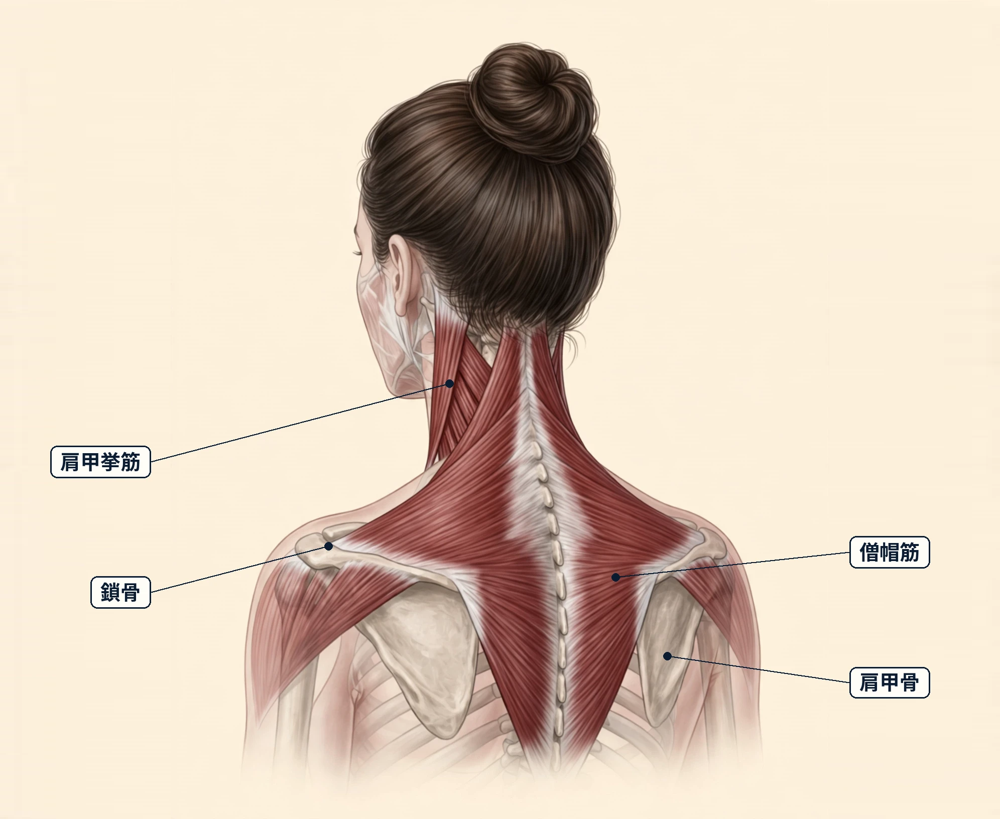
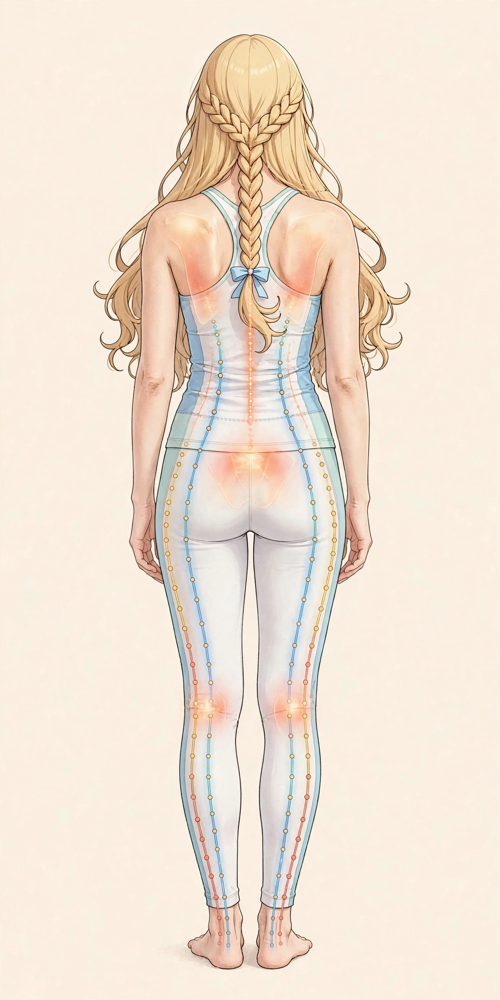
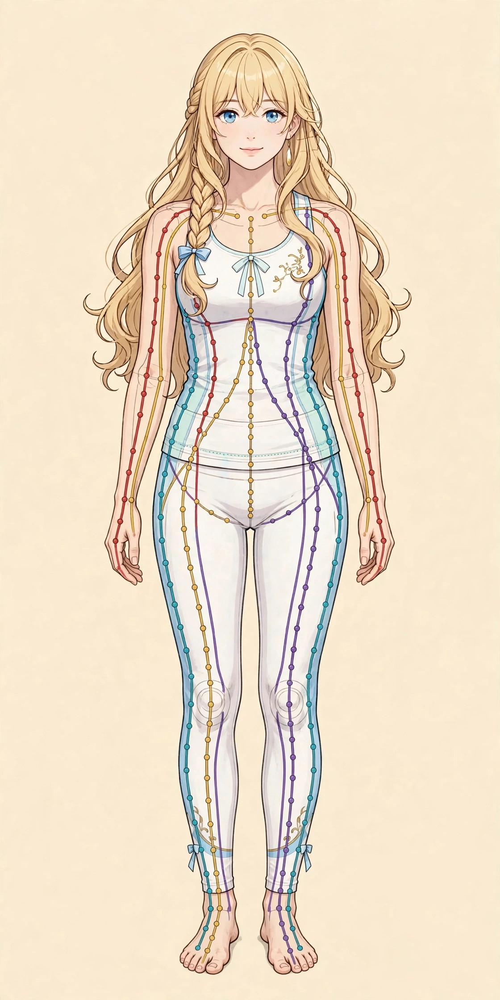

難波で朝に気になる首こり｜起き抜けの首の重さとセルフケア、受診の目安

１．首こりとは ― 朝の首の重さについて
「朝、目覚めたときから首が重く感じる」「起き抜けに首を左右に向けにくい日がある」「寝たはずなのに、首から肩にかけて張った感じで一日が始まる」——朝に気になる首こりは、眠りから目覚めた直後に意識しやすいお悩みの一つです。ここでいう首こりは、首の後ろや側面、肩につながる一帯の重さや張り、動かしにくさなどをまとめて表す日常的な言い方で、医学的な診断名ではありません。夕方に感じる肩の重さとは違い、朝の首こりは「寝ている間の過ごし方」や「前日の過ごし方」との関わりが話題になりやすい点が特徴です。日中に動いているうちに気にならなくなる方もいれば、頭の重さとあわせて感じ続ける方もいます。ただし、感じ方だけで、その背景を特定することはできません。この記事では、朝の首こりの一般的な解説、考えられる要因の例、起き抜けや日常で取り入れやすいセルフケア、そして先に医療機関へ相談したい目安を整理します。あくまで一般的な情報としてお読みください。
２．考えられる要因の整理
朝に首の重さや張りを感じるときの背景には、次のような寝ている間の環境や、前日の過ごし方が関係している場合があります。
- 枕の高さや硬さが合っていない：枕が高すぎたり低すぎたりすると、眠っている間、首が不自然な角度で支えられ続けることがあります。横向きで寝ることが多い方は、仰向けのときと必要な高さが違う場合もあります。
- 寝姿勢と寝返りの少なさ：うつ伏せで顔を横に向けた姿勢が続いたり、寝返りが少なく同じ姿勢のまま長く眠ったりすると、首まわりの一部に負担がかかり続ける場合があります。
- 寝る直前までのスマートフォンや画面：布団の中で画面をのぞき込む姿勢が続くと、頭が前に出た状態で首に力が入ったまま眠りにつくことがあります。眠りの浅さと重なって意識されることもあります。
- 寝室の冷え：冷房や季節の冷え込みで首や肩が冷えたまま眠ると、朝に首まわりの重さを感じやすい方もいます。特に首元が布団から出やすい方は、意識されることがあります。
- 前日の姿勢や疲れの持ち越し：デスクワークや家事などで首・肩に負担がかかった日は、その疲れが翌朝の感じ方に影響する場合があります。夕方の肩の重さについては、関連コラムもあわせてご覧ください。
- 眠りの浅さやストレス：眠りが浅い日が続いたり、緊張が抜けにくい日が続いたりすると、眠っている間も首や肩に力が入りやすいと言われます。
これらは一例であり、当てはまる要因があっても、それがご自身の首こりの背景であると決めつけることはできません。
３．日常で取り入れられるセルフケア
どれも特別な道具はいりません。起き抜けの時間や夜の過ごし方の中で、無理のない範囲で続けやすいものから取り入れてみてください。首はデリケートな場所ですので、強く回したり反らしたりする動かし方は避け、痛みが強まる場合は中止してください。背面の指標（図1）と、前面の経絡の流れ（図2）も参考にしてください。
- 起き抜けは布団の中でゆっくりと：目覚めた直後に勢いよく起き上がらず、仰向けのまま深呼吸をしたり、首を小さな範囲で左右に傾けたりして、様子を見ながら体を起こす方もいます。
- 首・肩を小さく動かす：肩をすくめてストンと下ろす、首を傾けて気持ちのよい範囲で止めるなど、呼吸をしながら小さな動きでほぐすきっかけにする方もいます。
- 温める：朝の洗顔やシャワーで首元まで温める、蒸しタオルを首の後ろに当てるなど、朝の支度の中で温める工夫を取り入れる方もいます。
- 枕を見直す：仰向けでは首のカーブが無理なく支えられ、横向きでは頭と背骨のラインがまっすぐに近くなる高さを目安に、タオルで高さを調整しながら試す方もいます。
- 寝る前の画面時間を区切る：就寝の少し前からスマートフォンを置き、照明を落として過ごすなど、眠りにつく前の過ごし方を整える方もいます。寝つきについては、関連コラムもあわせてご覧ください。
- 首元を冷やさない：冷える季節や冷房の効いた寝室では、首元まで布団をかける、薄手のタオルを首に巻くなどの工夫をする方もいます。
- 日中に首・肩を動かす時間を持つ：日中、同じ姿勢が続いた日は夕方のうちに肩まわりを動かしておくなど、前日の負担を持ち越さない工夫をする方もいます。


４．受診の目安
次のような場合は、セルフケアやサロンでのケアより先に、医療機関への相談をご検討ください。
- 腕や手にしびれがある、または手に力が入りにくい感じがある
- 首に強い痛みがあり、動かせない、または日に日に強くなっている
- 発熱を伴う、または首の動かしにくさとあわせて体調が悪い
- 転倒・打撲・交通事故などのケガのあとに痛みが出た
- めまいや吐き気、頭痛を強く伴う
- 朝の首の重さや痛みが数週間以上続き、よくならない
これらは一例です。首の痛みや動かしにくさの背景には、神経や関節の不調など、早めの対応が必要な体の不調が関係する場合もあります。当てはまる場合や、少しでも気になる症状がある場合は、自己判断せず整形外科など医療機関にご相談ください。
５．当店でのケアとサロンのご案内
ステラシリウス（難波）は、月〜土 17:00〜22:00（日曜休み）に営業する女性専用サロンです。カウンセリングで当日のお悩みをうかがい、首・肩・肩甲骨まわりを含めた体の状態を見ながら、オイルマッサージと美容整体を組み合わせた90分 10,000円（税込）のコースをご用意しています。完全個室で、シャワー完備のため、施術の前後に汗やオイルを流してからお帰りいただけます。一日の終わりの時間に体をほぐすことで、夜のリラックスした時間を過ごすきっかけとしてご利用ください。なお、ステラシリウスは近日開院予定のため、ご予約の受付はまだ開始していません。また、当サロンはリラクゼーションを目的としたサロンで、医療行為は行いません。首こりに関する治療を行うものではありませんので、「受診の目安」に当てはまる場合は、まず医療機関へご相談ください。